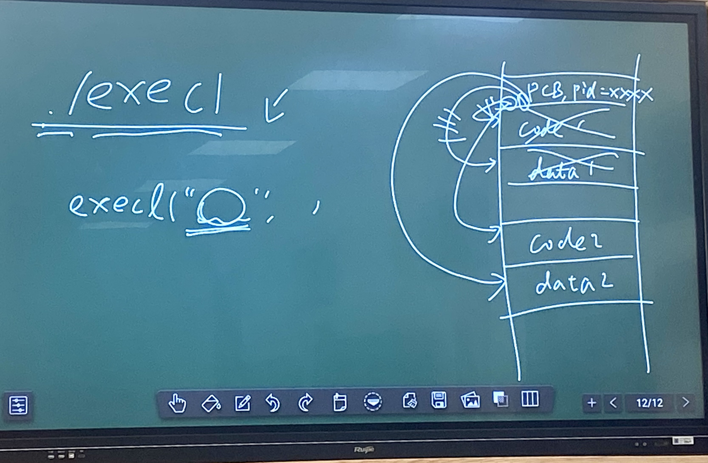
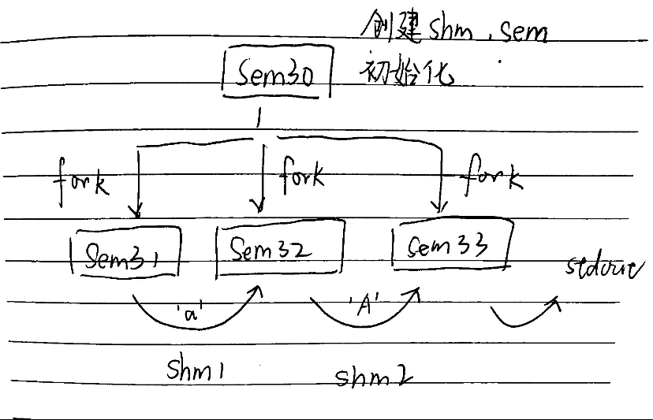
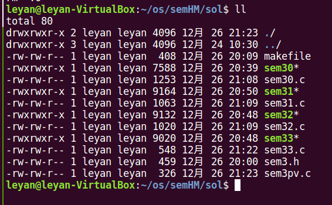

调了很久之后发现是shmget()写成了semget()导致共享内存段attach失败，但是Shell没给提示，一开始以为是死锁了各种检查信号量，最后gdb跑了一下发现是段错误了，顺便学习了怎样用gdb调试多进程并发的程序
信号量 用于同步和互斥
当信号量用于表示资源数量协助我们进行资源分配与回收时，不一定只在零一之间变动
用到的函数 1 2 3 4 5 #include <sys/types.h> #include <sys/ipc.h> #include <sys/sem.h> int semget (key_t key, int nsems, int semflg)
创建信号量集合
1 int semctl (int semid, int semnum, int cmd, ...)
semnum是信号量的下标，cmd是操作的动作
cmd使用SETVALUE设置某个信号量的值
cmd使用SETALL设定一组信号量的值
NOWAIT进行一个尝试，不阻塞
UNDO意外退出没有V的时候会自动V，推荐使用
并发时进程映像的替换 exec函数族
execl(const char *path, const char *arg, ...) 参数数量不确定
execv(const char *path, char *const argv[])
拿指定的静态的可执行文件，覆盖当前进程的进程映像中的代码和数据，除了PID以外全都换了
不创建新的进程
fork之前，父子进程需要共享的内存、信号量、管道，要打开

信号量与共享内存共用并使用信号量同步 作业 以随机间隔生成随机字母并完成大小写转换
三进程并发，进程1生成字母，进程2大小写转换，进程3输出转换结果，每生成一个随机字母流水线就动一圈
进程1和进程2之间用共享内存段shm_1通信，进程2和进程3之间用共享内存段shm_2通信
使用四个信号量分别实现两个共享内存段的互斥访问与访问同步

1 2 3 4 5 6 7 8 9 10 11 12 13 14 15 16 17 18 19 20 21 22 23 24 25 26 27 28 29 30 31 32 33 34 35 36 37 38 39 40 41 42 43 44 45 46 47 48 49 50 51 52 53 54 55 56 57 58 #include "sem3.h" int main (int argc, char * argv[]) int semid, shm1_id, shm2_id, semkey, shm1_key, shm2_key; int p1, p2, p3; union semun arg; semkey = ftok(PATH_FOR_FTOK, 'X' ); shm1_key = ftok(PATH_FOR_FTOK, 'Y' ); shm2_key = ftok(PATH_FOR_FTOK, 'Z' ); semid = semget(semkey, 4 ,IPC_CREAT | 0600 ); shm1_id = shmget(shm1_key, SHM_SIZE, IPC_CREAT | 0600 ); shm2_id = shmget(shm2_key, SHM_SIZE, IPC_CREAT | 0600 ); arg.array = (unsigned short *)malloc (sizeof (unsigned short ) * 4 ); arg.array [0 ] = 1 ; arg.array [1 ] = 0 ; arg.array [2 ] = 1 ; arg.array [3 ] = 0 ; semctl(semid, 0 , SETALL, arg); p1 = fork(); if (p1) { p2 = fork(); if (p2) { p3 = fork(); if (p3) { waitpid(p1, NULL , 0 ); waitpid(p2, NULL , 0 ); waitpid(p3, NULL , 0 ); semctl(semid, 0 , IPC_RMID); shmctl(shm1_id, IPC_RMID, NULL ); shmctl(shm2_id, IPC_RMID, NULL ); free (arg.array ); printf ("\n" ); } else { execl("./sem33" , argv[1 ], NULL ); } } else { execl("./sem32" , argv[1 ], NULL ); } } else { execl("./sem31" , argv[1 ], NULL ); } return 0 ; }
1 2 3 4 5 6 7 8 9 10 11 12 13 14 15 16 17 18 19 20 21 22 23 24 25 26 27 28 29 30 31 32 33 34 35 36 37 38 39 40 41 42 43 44 45 46 47 48 49 50 #include "sem3.h" #include <stdlib.h> #include <ctype.h> int main (int argc, char *argv[]) int semkey, shm1_key, semid, shm1_id; int seed; char c, *shm1_addr = NULL ; semkey = ftok(PATH_FOR_FTOK, 'X' ); shm1_key = ftok(PATH_FOR_FTOK, 'Y' ); semid = semget(semkey, 0 , IPC_EXCL); shm1_id = shmget(shm1_key, 0 , IPC_EXCL); seed = getpid(); int i; for (i = 1 ; i <= atoi(argv[0 ]); i++) { do { c = (char )(rand_r(&seed) % 128 ); } while (!isalpha (c)); printf ("Random letter %c\n" , c); P(semid, 0 ); shm1_addr = (char *)shmat(shm1_id, NULL , 0 ); shm1_addr[0 ] = c; shmdt(shm1_addr); V(semid, 0 ); V(semid, 1 ); sleep(rand_r(&seed) % 5 + 1 ); } return 0 ; }
1 2 3 4 5 6 7 8 9 10 11 12 13 14 15 16 17 18 19 20 21 22 23 24 25 26 27 28 29 30 31 32 33 34 35 36 37 38 39 40 41 42 43 44 45 46 47 #include "sem3.h" #include <ctype.h> int main (int argc, char *argv[]) int semkey, shm1_key, shm2_key, semid, shm1_id, shm2_id; char c, *shm1_addr = NULL , *shm2_addr = NULL ; semkey = ftok(PATH_FOR_FTOK, 'X' ); shm1_key = ftok(PATH_FOR_FTOK, 'Y' ); shm2_key = ftok(PATH_FOR_FTOK, 'Z' ); semid = semget(semkey, 0 , IPC_EXCL); shm1_id = shmget(shm1_key, 0 , IPC_EXCL); shm2_id = shmget(shm2_key, 0 , IPC_EXCL); int i; for (i = 1 ; i <= atoi(argv[0 ]); i++) { P(semid, 1 ); P(semid, 0 ); shm1_addr = (char *)shmat(shm1_id, NULL , 0 ); c = shm1_addr[0 ]; shmdt(shm1_addr); printf ("read c = %c\n" , c); V(semid, 0 ); if (islower (c)) c = toupper (c); else c = tolower (c); P(semid, 2 ); shm2_addr = (char *)shmat(shm2_id, NULL , 0 ); shm2_addr[0 ] = c; shmdt(shm2_addr); V(semid, 2 ); V(semid, 3 ); } return 0 ; }
1 2 3 4 5 6 7 8 9 10 11 12 13 14 15 16 17 18 19 20 21 22 23 24 25 26 27 28 #include "sem3.h" int main (int argc, char *argv[]) int semkey, shm2_key, semid, shm2_id; char c, *shm2_addr = NULL ; semkey = ftok(PATH_FOR_FTOK, 'X' ); shm2_key = ftok(PATH_FOR_FTOK, 'Z' ); semid = semget(semkey, 0 , IPC_EXCL); shm2_id = shmget(shm2_key, 0 , IPC_EXCL); int i; for (i = 1 ; i <= atoi(argv[0 ]); i++) { P(semid, 3 ); P(semid, 2 ); shm2_addr = (char *)shmat(shm2_id, NULL , 0 ); c = shm2_addr[0 ]; printf ("After transform %c\n" , c); shmdt(shm2_addr); V(semid, 2 ); } return 0 ; }
需要注意的是信号量的使用，四个信号量分别为
信号量
初始值
用途
sem0
1
互斥 shm_1
sem1
0
同步进程1进程2
sem2
1
互斥 shm_2
sem3
0
同步进程2进程3
进程1需要先获得shm_1的互斥访问权，等待信号量sem0，将生成的随机字母写入shm_1，然后释放信号量sem0
进程2必须在进程1之后进行，因此进程2应当先等待信号量sem1，进程1在结束后会signal(sem1)唤醒进程2；被唤醒之后进程2取得对shm_1的互斥访问权，读取字母并进行大小写转换，然后释放sem0；接下来进程2取得对shm_2的互斥访问权，把转换后的结果写入shm_2，释放信号量sem1
进程3必须在进程2之后进行，因此进程2应当先等待信号量sem3，进程2在结束后会signal(sem3)唤醒进程3；被唤醒之后进程3取得对shm_2的互斥访问权，读取字母并进行大小写转换，然后释放sem2；
P操作为wait，V操作为signal，两个操作写在单独的文件里
1 2 3 4 5 6 7 8 9 10 11 12 13 14 15 16 #include <unistd.h> #include <sys/types.h> #include <sys/ipc.h> #include <sys/sem.h> int P (int semid, int semnum) struct sembuf sops = {-1 , SEM_UNDO}; return semop(semid, &sops, 1 ); } int V (int semid, int semnum) struct sembuf sops = {1 , SEM_UNDO}; return semop(semid, &sops, 1 ); }
整个作业分为五个c文件和一个头文件

使用makefile进行自动化编译
1 2 3 4 5 6 7 8 9 10 11 12 13 14 15 16 17 18 19 20 21 22 23 24 25 all: sem31 sem32 sem33 sem30 .PHONY : allsem31: sem31.c sem3pv.o sem3.h gcc -c sem31.c gcc -o sem31 sem31.o sem3pv.o -g sem32: sem32.c sem3pv.o sem3.h gcc -c sem32.c gcc -o sem32 sem32.o sem3pv.o -g sem33: sem33.c sem3pv.o sem3.h gcc -c sem33.c gcc -o sem33 sem33.o sem3pv.o -g sem30: sem30.c sem3.h gcc -c sem30.c gcc -o sem30 sem30.o -g sem3pv.o: sem3pv.c gcc -c sem3pv.c -g clean: rm *.o